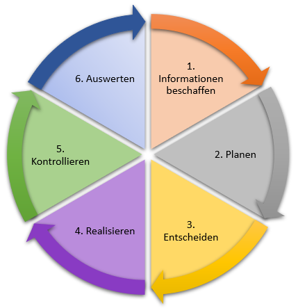

Arbeitsauftrag: IPERKA im Detail
Aufgabe 1
| Phase | Beispiel 1: Parkplatztool | Beispiel 2: Neues IT-Zimmer |
|---|---|---|
| Informieren | Man holt sich Informationen vom Kunden, wie er sein Parkplatztool haben will. | Man holt sich Informationen, was das neue IT-Zimmer können muss, wie es aussehen soll usw. |
| Planen | Man Plant die Schritte durch, welche für die Erstellung des Parkplatz Tools nötig sind. Zum Beispiel wieviele Mitarbeiter daran arbeiten oder wieviel Geld man dafür in die Hand nimmt usw. | Man Plant alles durch. Vom Kabelplan bis zum Betriebssystem. Ausserdem plant man noch seine Ressourcen: Zeit, Mitarbeiter und Geld. Meistens macht man mehre Vorschläge und entscheidet in der nächsten Phase was man nimmt. |
| Entscheiden | Man Entscheided, welchen Lösungsansatz man nimmt, welche Programmiersprache oder Umgebung etc. man wählt für das Parkplatztool | Man entscheidet sich, für welchen Plan man sich entscheidet. |
| Realisieren | Man beginnt das Tool zu programmieren. | Man beginnt das Zimmer einzurichten und man bringt das System zum Laufen. |
| Kotrollieren | Man beginnt das Zimmer einzurichten und man bringt das System zum Laufen. | |
| Auswerten | Man Reflektiert, was gut funktioniert hat, was nicht, was man verbessern könnte, die Ziele eingehalten wurden usw. | |

[A]
Aufgabe 2
Welches ist für mich der schwierigste Schritt
Jeder Schritt, hat aus meiner Sicht seine Tücken, aber am meisten Probleme habe ich mit dem Planen. Erstens mache ich dies nicht so gerne, da ich lieber direkt mit dem Projekt beginne, obwohl ich sonst alles in meinem Leben plane. In den beiden Projekten, welche ich am meisten Probleme hatte. Meistens habe ich auch komplett schlecht geplant, dass ich meistens den Plan ziemlich schnell verwerfen musste, da der Plan Mist war.